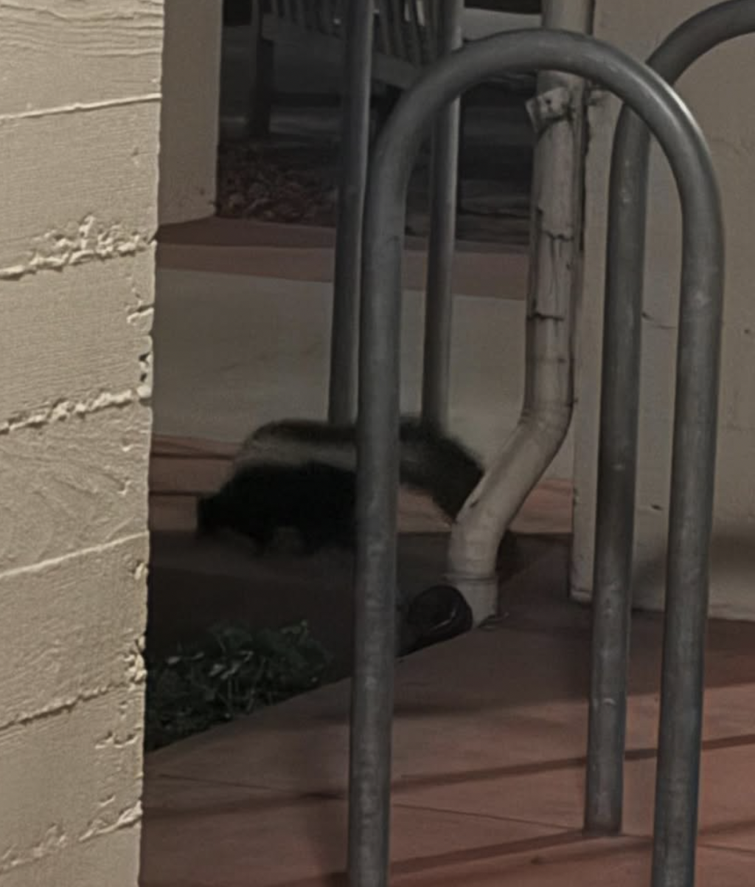
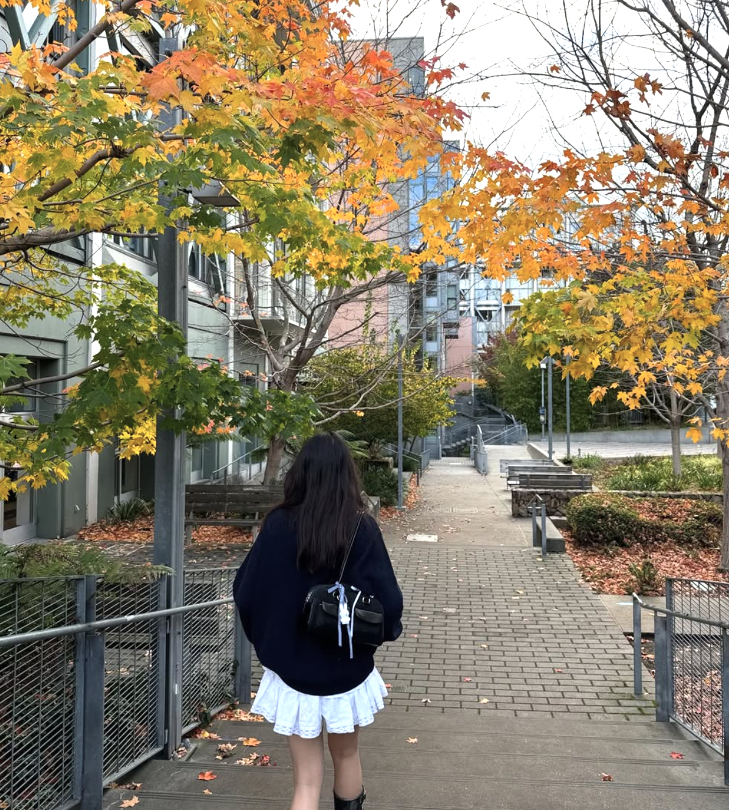
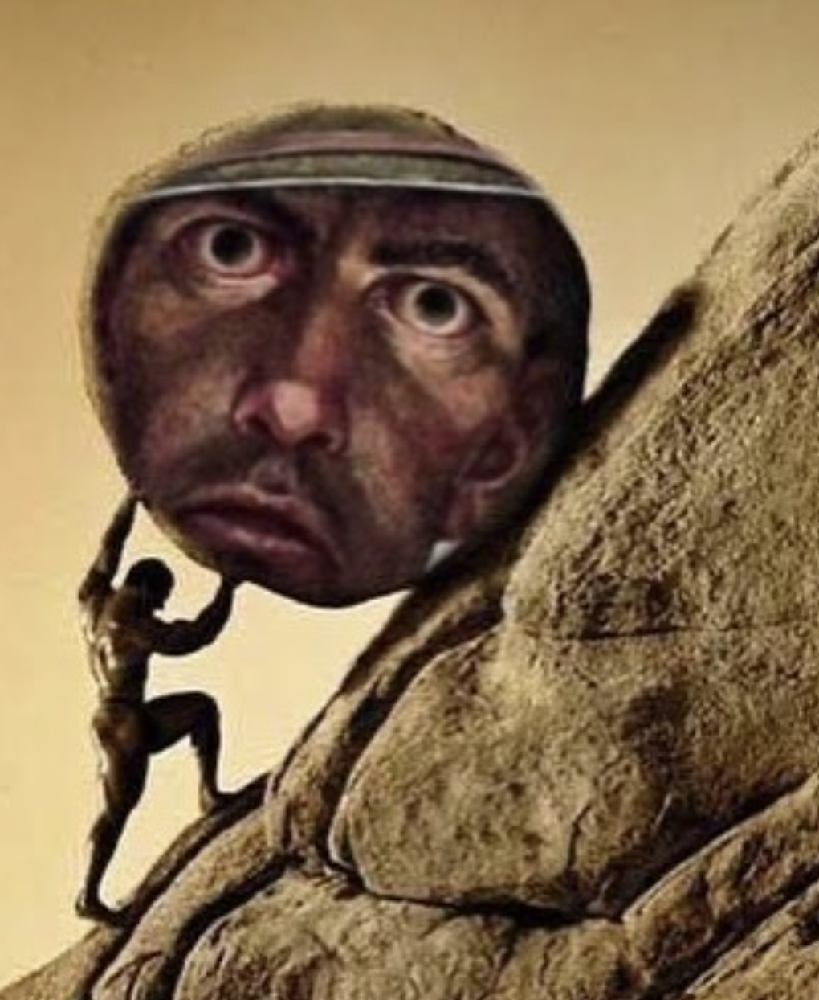

Hello yueyuenuts These are pictures from like the pats week but i wanted to let u know that i went on a solo hike today for my natural history field trip. During this hike i busted my ass climbing up 192938283772273772 flights of stairs. I thought of sisyphus who had to do what i was doing but with the additional burden of a boulder. After i sympathized with him i continued and huffed and puffed my way up the stairs and saw san francisco but then i got a wee bit lost. However! I am intelligent and brave so i bumbled my way through the woods in the general direction of the ckc track. I then trailblazed for like 15 feet (oops) (sorry) but after these 15 feet i ended where i was suposed to be. I then did ten cartwheels and the middle splits to celebrate and then opened my phone and found a picture of jeslyns forehead Also i saw the clark kerr skunk for the first time two days ago he was very cute